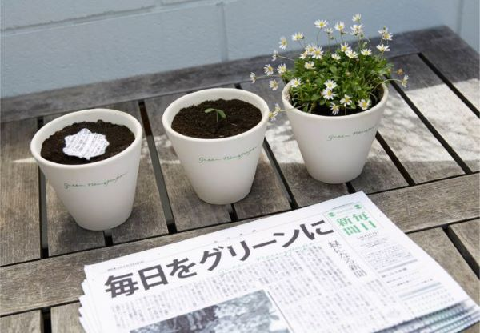

It was invented by the famous Japanese daily newspaper The Mainichi Shimbunsha and published on
“Greenery Day” - May 4, 2016.
Not only does this company want you to put it in the trash and save it for packing paper after
reading it, but it also wants you to plant trees with it!
The special edition is dedicated to environmental news printed on 100% biodegradable paper with
plant-based inks.
“Green Newspaper”

Raw materials
It is a mixture of recycled paper, water, and flower seeds.

Process
- Collecting old paper: Used paper is collected from different sources.
- Sorting and cleaning paper: Paper is sorted to remove impurities and washed.
- Tear paper into small fibers: Clean paper is torn into small fibers and mixed with water to form a pulp mixture.
- Pulp treatment: The pulp is treated with chemicals to remove ink and impurities.
- Create new paper sheets: Clean paper pulp is spread evenly on the mold to form new paper sheets and dried.
- Add plant seeds: Plant seeds are mixed into the pulp or placed on the surface of the paper plate.
- Cutting and packaging: The dry and seeded paper is cut into the required size and packaged.